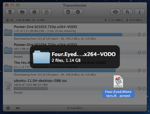
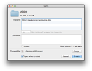
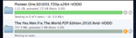
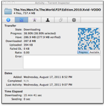
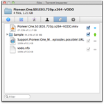

Welcome to Transmission!
Transmission is a BitTorrent client. It is used for peer to peer filesharing over the internet. BitTorrent is a fast way of transferring files, because everyone who downloads must also upload to others. This means speeds are only limited by the number of people connected to a given torrent - the more people the better!
How do I use it? |
|
|  |
Download your file's associated 'torrent file' (extension .torrent). These are commonly found at 'tracker' websites. Once you have the torrent file, drag it into Transmission - downloading should start immediately. You can pause and resume transfers at any time, so long as the files remain in your download folder. It is good etiquette to share or 'seed' the file for a while (ie leave it uploading) once your download is complete. You can use Transmission's action menu, the individual torrent menu, as well as the Inspector to adjust download and seeding preferences on the fly. |
Can I create my own torrents? |
|
|  |
Yes, you can share a file or folder by dragging it into Transmission. Alternatively, click 'Create' in the toolbar, and choose your file. When the dialogue box appears, enter your tracker address, comments and private status. You can change the torrent filename, as well as where it will be saved to by clicking 'Change'. Once you are done, click 'Create'. Transmission will automatically optimize the torrent file for what you are sharing. |
Can I schedule my transfers? |
|
|
Yes, by using 'Speed Limit Mode'. Simply go to Preferences >> Bandwidth, and then set both the speed you would like Transmission to be limited to, as well as the period of time you would like the limits applied. When Speed Limit Mode is enabled, the turtle will be illuminated in blue. |
|
Can I queue my transfers? |
|
|  |
Yes, you can queue seeding and/or downloading transfers via Preferences >> Transfers >> Management. The queue system is very simple: You start and pause transfers as usual, but if you're over the queue limit starting a transfer will instead make it "Waiting to download..." You can force a transfer to start by holding down option and clicking the orange resume button; or by using the Transfers menu item "Resume Selected Without Wait". |
Where can I find more detailed information on my torrents? |
|
|  |
Click the Inspector icon, or simply double-click any transfer in the main window. The inspector gives you:
|
Can I choose to download specific files? |
|
|  |
Yes, via the Inspector. Double click any transfer to open it and then click the 'Files' tab. Simply check the boxes next to the files you want to download (the default is all of them). You can even set a priority (green/high or orange/low) to each file, if you want some to finish faster than others. To do so, use the selector that appears next to the checkboxes. If you are frequently going to selectively download the files in your torrents, you might want to disable "Start Transfers when added" in Preferences >> Transfers >> Management. This way you can organise your transfer before it starts, to avoid wasting download bandwidth. |